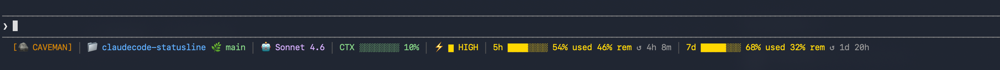

A one-command setup for a richly decorated Claude Code statusline — context, rate limits, effort, git branch — with Caveman mode baked in.

Toggle segments to see what the installer would produce. The matching SL_* env vars update below.
Seven segments, color-coded by severity.
Shows the active mode. Hidden when off.
Folder name and current git branch.
Which model is answering right now.
Usage bar going green → yellow → red.
Shown only when the model supports it.
Spent, remaining, and time until reset.
Both values colored independently by severity.
Optional live estimate of what Caveman saves.
Needs Claude Code, Node.js LTS, and bash (Git for Windows or WSL on Windows).
git clone https://github.com/FahimFBA/claudecode-statusline.git cd claudecode-statusline chmod +x install.sh ./install.sh
Then restart Claude Code. Choose 1) Full install or 2) Custom to pick components.
~/.claude/hooks/.~/.claude/settings.json — existing file is backed up first, other config survives.claude plugins install caveman --marketplace caveman.Re-run the installer and pick option 2, or set env vars in the statusLine command.
| Env var | Default | Hides |
|---|---|---|
SL_CAVEMAN=0 | on | Caveman badge |
SL_PROJECT=0 | on | Project + branch |
SL_MODEL=0 | on | Model name |
SL_CTX=0 | on | Context window bar |
SL_EFFORT=0 | on | Effort level |
SL_5H=0 | on | Hourly rate limit |
SL_7D=0 | on | Weekly rate limit |
SL_SAVINGS=0 | on | Token savings |
Default Caveman mode:
export CAVEMAN_DEFAULT_MODE=lite # lite | full | ultra | off
# or ~/.config/caveman/config.json
{ "defaultMode": "lite" }Terse replies, same technical substance. Powered by JuliusBrussee/caveman.
| Command | Effect |
|---|---|
/caveman | Activate full mode |
/caveman lite | Fewer drops |
/caveman ultra | Max compression |
/caveman off | Deactivate |
/caveman-stats | Session usage + savings |
/caveman-stats --all | Lifetime stats |
| Level | Behaviour |
|---|---|
lite | Drop articles and filler, keep sentence structure |
full | Fragments OK, short synonyms |
ultra | Minimal connectives |
rm ~/.claude/hooks/caveman-*.js ~/.claude/hooks/caveman-statusline.sh
Then remove the hooks, statusLine, enabledPlugins and extraKnownMarketplaces keys from ~/.claude/settings.json.